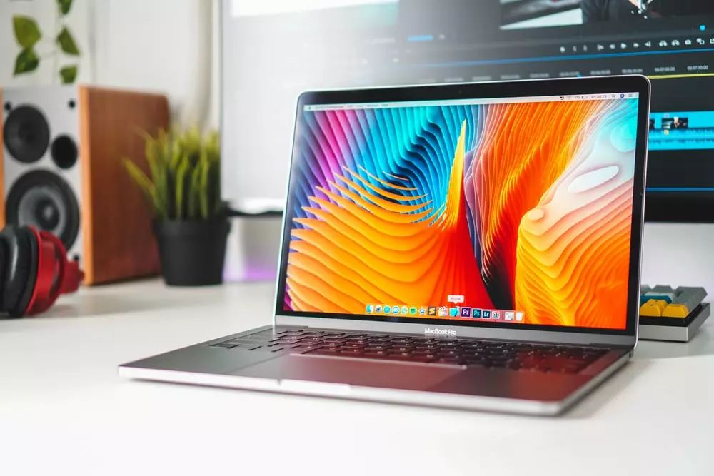

终于放弃了单调的swagger-ui了，选择了这款神器—knife4j
点击上方“匠心零度”，选择“设为星标”
做积极的人，而不是积极废人

作者：最美分享Coder
来源：http://39sd.cn/9D85F
一、介绍
knife4j是为Java MVC框架集成Swagger生成Api文档的增强解决方案（在非Java项目中也提供了前端UI的增强解决方案），前身是swagger-bootstrap-ui,取名knife4j是希望她能像一把匕首一样小巧,轻量,并且功能强悍!

Github
https://github.com/xiaoymin/swagger-bootstrap-ui码云
https://gitee.com/xiaoym/knife4j三、功能特性
简洁
基于左右菜单式的布局方式,是更符合国人的操作习惯吧.文档更清晰...
个性化配置
个性化配置项,支持接口地址、接口description属性、UI增强等个性化配置功能...
增强
接口排序、Swagger资源保护、导出Markdown、参数缓存众多强大功能...
四、功能预览
在线预览
http://knife4j.xiaominfo.com/doc.html选择不同接口

Authorize

swagger实体
包含了swagger实体的相关信息

swagger全局设置
全局参数设置


离线文档导出
Knife4j提供导出4种格式的离线文档(Html\Markdown\Word\Pdf)

个性化设置

api文档


搜索功能

五、使用简介
项目结构

目前主要的模块
目前主要的模块包括：模块名称说明：knife4j为Java MVC框架集成Swagger的增强解决方案knife4j-admin云端Swagger接口文档注册管理中心,集成gateway网关对任意微服务文档进行组合集成knife4j-extensionchrome浏览器的增强swagger接口文档ui,快速渲染swagger资源knife4j-service为swagger服务的一系列接口服务程序knife4j-frontknife4j-spring-ui的纯前端静态版本,用于集成非Java语言使用swagger-bootstrap-uiknife4j的前身,最后发布版本是1.9.6单纯皮肤增强
不使用增强功能,纯粹换一个swagger的前端皮肤，这种情况是最简单的,你项目结构下无需变更
可以直接引用swagger-bootstrap-ui的最后一个版本1.9.6或者使用knife4j-spring-ui
老版本引用
<dependency>
<groupId>com.github.xiaoymin</groupId>
<artifactId>swagger-bootstrap-ui</artifactId>
<version>1.9.6</version>
</dependency>新版本引用
<dependency>
<groupId>com.github.xiaoymin</groupId>
<artifactId>knife4j-spring-ui</artifactId>
<version>${lastVersion}</version>
</dependency>Spring Boot项目单体架构使用增强功能
在Spring Boot单体架构下,knife4j提供了starter供开发者快速使用
<dependency>
<groupId>com.github.xiaoymin</groupId>
<artifactId>knife4j-spring-boot-starter</artifactId>
<version>${knife4j.version}</version>
</dependency>该包会引用所有的knife4j提供的资源，包括前端Ui的jar包
Spring Cloud微服务架构
在Spring Cloud的微服务架构下,每个微服务其实并不需要引入前端的Ui资源,因此在每个微服务的Spring Boot项目下,引入knife4j提供的微服务starter
<dependency>
<groupId>com.github.xiaoymin</groupId>
<artifactId>knife4j-micro-spring-boot-starter</artifactId>
<version>${knife4j.version}</version>
</dependency>在网关聚合文档服务下,可以再把前端的ui资源引入
<dependency>
<groupId>com.github.xiaoymin</groupId>
<artifactId>knife4j-spring-boot-starter</artifactId>
<version>${knife4j.version}</version>
</dependency>六、总结
针对knife4j的总结，无非就是牛逼来形容，切实的解决了swagger ui不够友好的问题，而且还可以集成到其他语言的api项目中，真真切切的需要感谢开发作者提供了这么好的工具供我们使用，小伙伴是不是心动了，赶紧去试试吧！enjoy it！
END
如果读完觉得有收获的话，欢迎点【好看】，关注【匠心零度】，查阅更多精彩历史！！！
让我“好看”